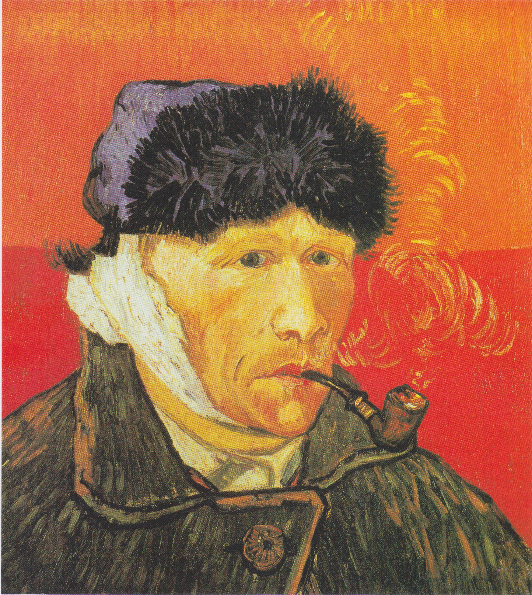
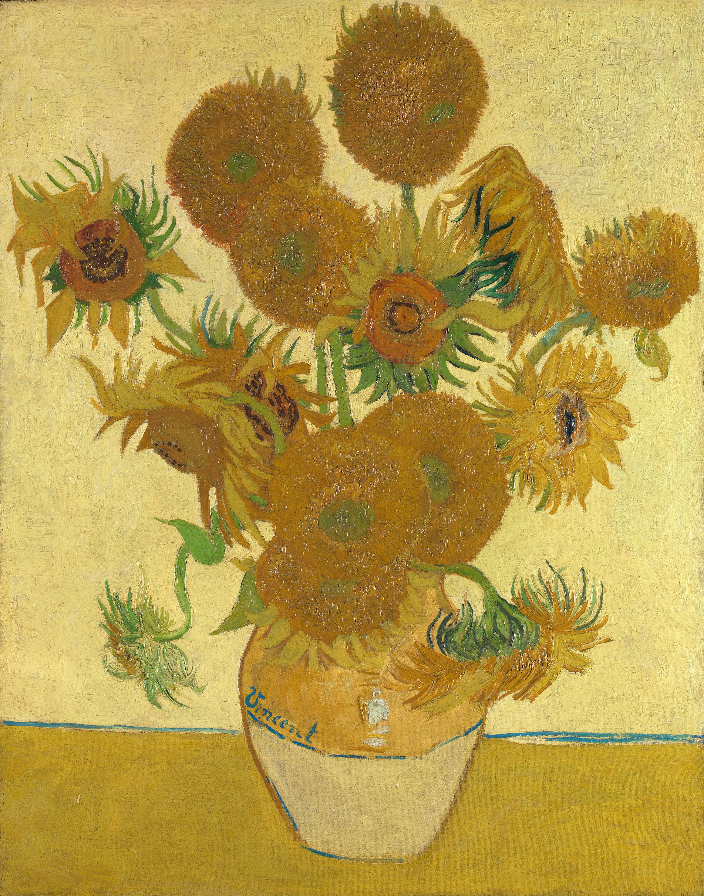
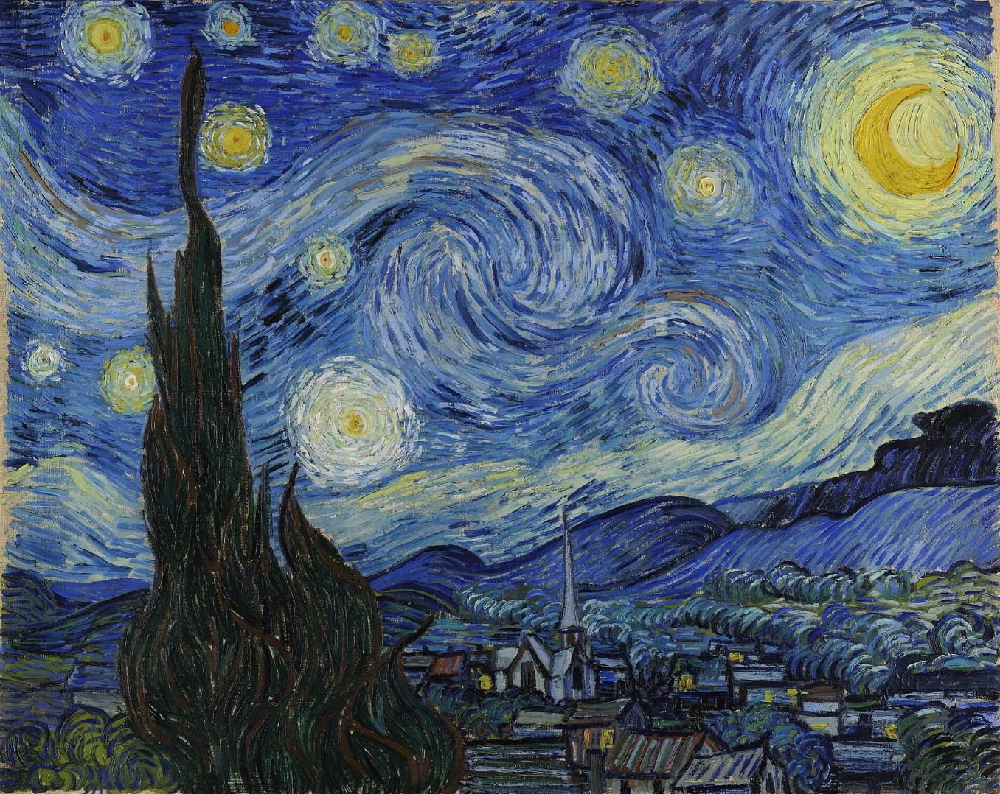
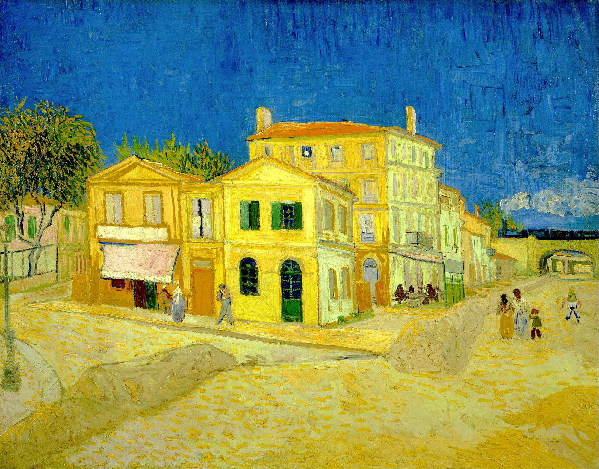
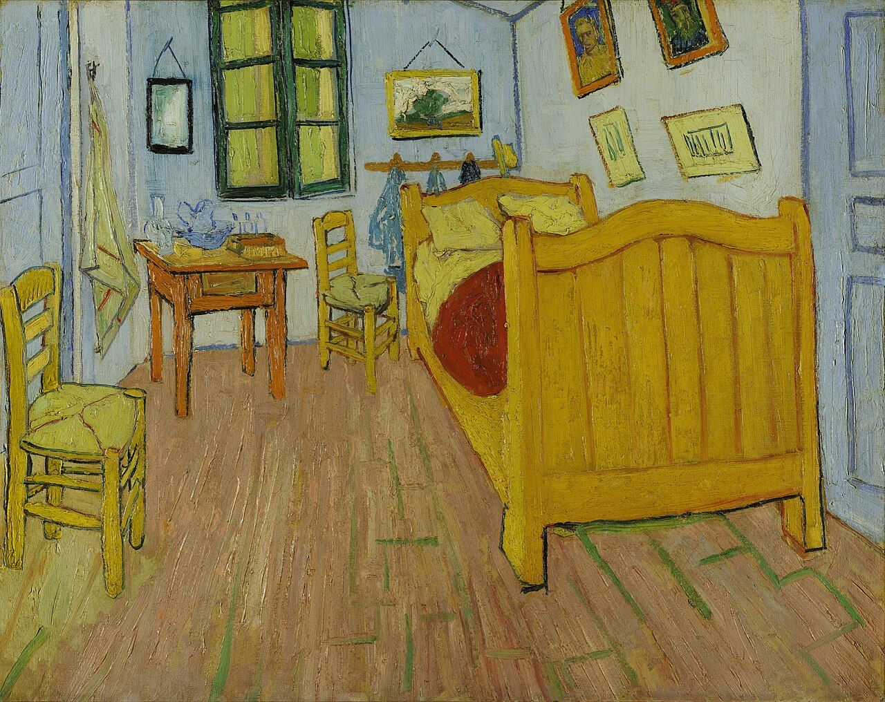
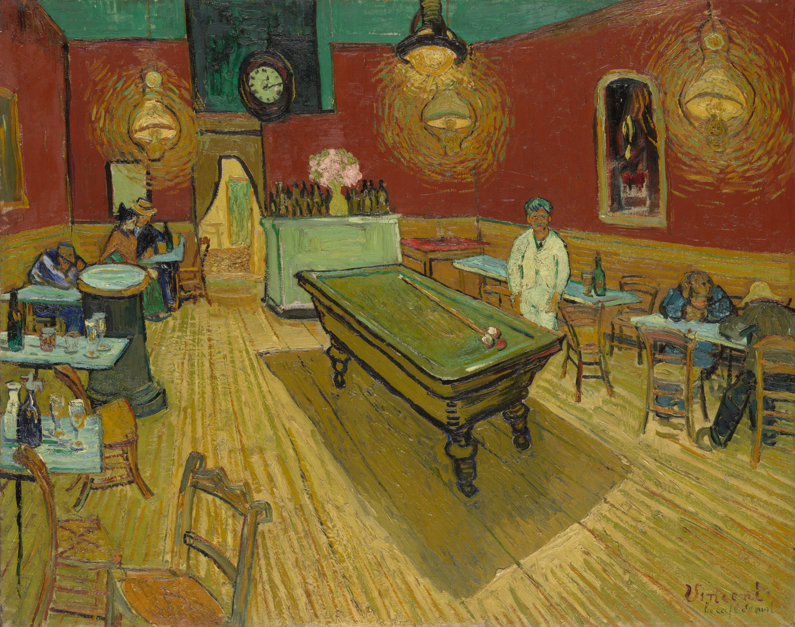
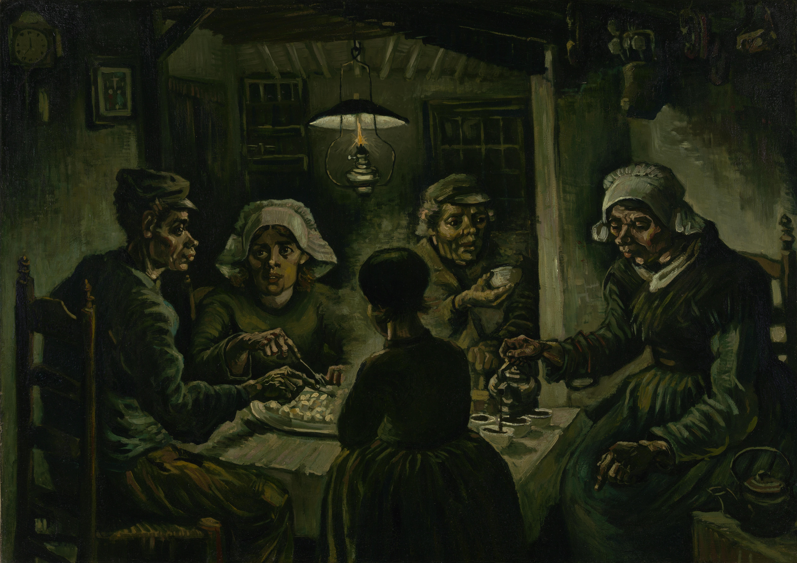
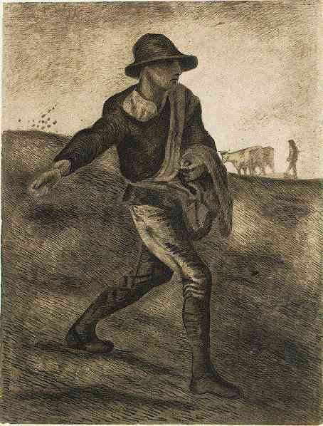
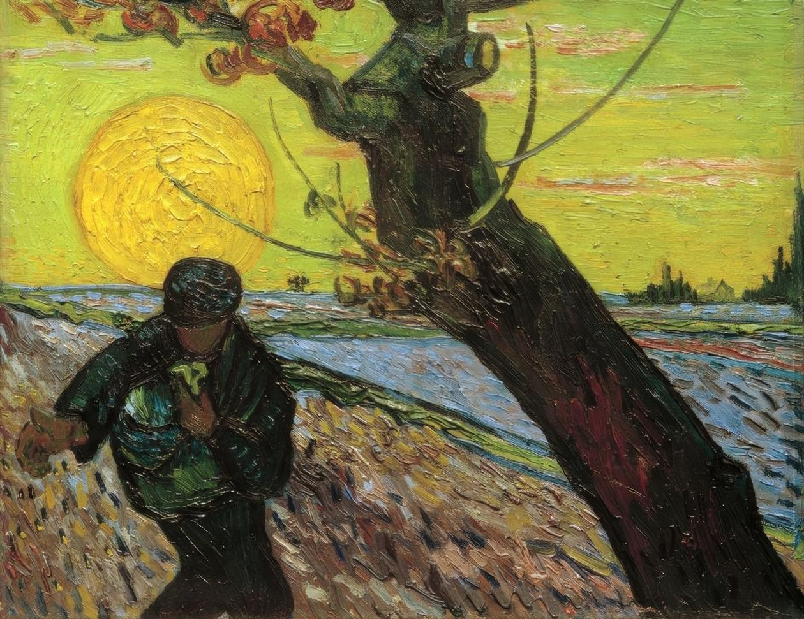
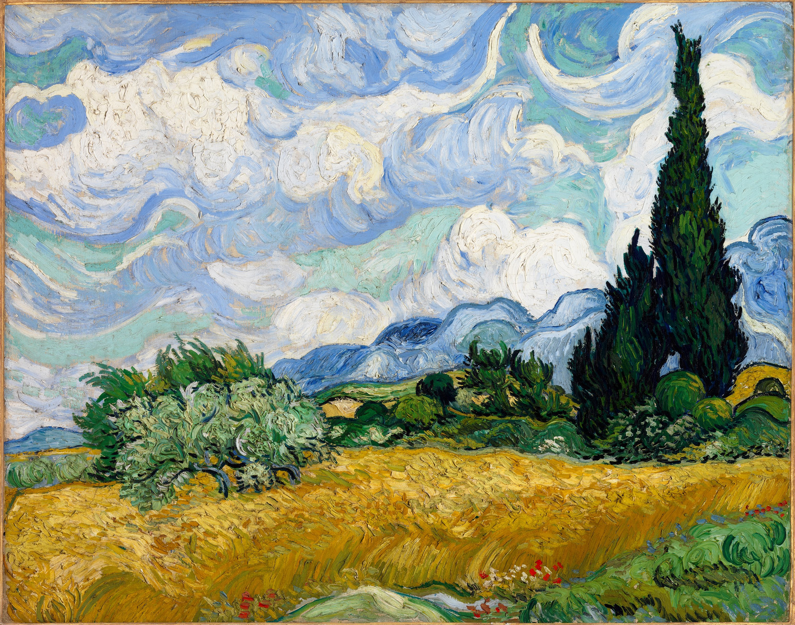

Capítulo 21
El mundo creado por Van Gogh
Si se intenta definir con una sola frase la obra de Vincent van Gogh, buscar un epígrafe para ella, lo que mejor se ajusta son las palabras del propio pintor: «Ese horno ardiente de la creación»1. Mejor de lo que él mismo dijo es imposible decirlo. Con más precisión no puede definirse la esencia de su núcleo artístico. Ese horno ardiente de la creación… Y esa fundición es él mismo. Miren cualquiera de los cuadros de Vincent van Gogh, desde los primeros ensayos hasta sus últimas obras. Por supuesto, se diferencian mucho unos de otros, pero son siempre cosas de tensión extrema, de temperatura extrema. Color, forma, composición, movimiento plástico de sus flores, sus calles, su sol: la tensión es tan grande que de otro modo no puede definírsele.

Es interesante que Vincent van Gogh trabajara como pintor muy poco. En general murió en la edad clásica del genio, a los treinta y siete años. Y trabajó menos de diez años. Si hablamos de lo que es Van Gogh, sin lo cual Van Gogh no existe, sin lo cual no existen ese nombre, esa imagen, ese concepto, son los últimos cuatro años: dos años en París, un año en Arlés y un año en el hospital de Saint-Rémy y en la pequeña ciudad de Auvers-sur-Oise2, donde murió. Puede uno imaginarse qué es eso, ¡qué tensión de todas las fuerzas! Es su trabajo. Y si a eso se suma cómo vivía, en qué condiciones trabajaba, representarse hoy una vida de tal intensidad es prácticamente imposible. Si se miran todas sus obras, sus «Girasoles», sus «Cipreses», sus retratos, quedará claro qué es ese horno ardiente de la creación del que hablaba.
Pero comencemos por el principio. Vincent van Gogh nació en 1853 en la provincia holandesa de Brabante Septentrional, en una pequeña aldea, en la familia de un pastor protestante. Esto tiene gran importancia. Y no solo porque él mismo fuera durante algún tiempo pastor3 (es decir, pensó en algún momento en hacerse sacerdote, ejerció el pastorado). La cosa es completamente distinta. La cosa está en que ese pastorado protestante de provincia influyó muy fuertemente en su constitución interior, en su visión del mundo, en su relación con la vida, con las personas. Y volveremos aún a esto, porque tiene gran importancia para toda su obra.
Y además de esa fecha señalemos otra: 1872. Hay que señalarla porque desde 1872 comienza la correspondencia de Van Gogh4. En lo fundamental es la correspondencia con su hermano Theodor, que era cuatro años menor que él. Sus vidas eran inseparables, como la cinta de Möbius, eran vasos comunicantes: uno sin el otro es simplemente impensable ya en la historia actual de la cultura. Esa correspondencia comenzó en 1872. Y antes de hablar del propio Van Gogh, de «El café nocturno», de su vida, de otros cuadros suyos, hay que decir que la obra de Van Gogh tiene en general como dos aspectos: su pintura, sus cuadros, y su literatura, su obra literaria. Sus cartas están dirigidas fundamentalmente a su hermano Theodor. Además de a Theodor, Van Gogh escribió al pintor con quien estuvo próximo, Émile Bernard, a otro pintor que desempeñó un papel enorme en su vida, Paul Gauguin, y a toda una serie de personas. Esos textos componen el libro muchas veces editado y reeditado «Cartas de Vincent van Gogh».
En ruso, la primera edición académica completa de estas cartas apareció en 1935, en dos volúmenes. Desde entonces, tanto en Rusia como en todo el mundo, la correspondencia de Van Gogh se edita y se reedita regularmente. Las cartas de Vincent van Gogh representan un trabajo literario, un trabajo memorialístico, representan una investigación histórica, representan una rarísima descripción de la época y de las personas. Y representan una confesión íntima, de la más profunda sinceridad, como un flujo de conciencia, sobre sí mismo, sobre su propia obra. Por eso las cartas de Van Gogh existen como obras literarias autónomas, además de todo lo demás. A los historiadores del arte les resulta muy difícil prescindir de ellas, porque sin esas cartas la investigación de su obra es casi imposible; lo citamos todo el tiempo. Pinta un cuadro y cada vez ese cuadro va acompañado de su pequeño ensayo, de su pequeña explicación para nosotros como espectadores: cómo debemos mirar ese cuadro, qué debemos ver en él, qué es lo principal en él. Y no lo hace adrede; lo hace porque él mismo lo vive así. Eso es precisamente ese acto ardiente, de alta temperatura, de vivencia creadora por parte del pintor de sus propias obras. Van Gogh estaba muy solo. Y sus cartas son comunicación, una comunicación muy amplia con las personas cercanas a él. Por eso puede decirse que el legado de Vincent van Gogh tiene dos aspectos: su obra pictórica y su correspondencia.
Como ya se ha dicho, Van Gogh nació en Holanda, era holandés. Pero en general es un pintor francés. Van Gogh no tuvo formación artística sistemática. Su bautismo artístico lo recibió de su primer maestro, el pintor holandés Mauve5, en 1881. Después del bautismo artístico recibido de Mauve, desde 1881 hasta 1890 transcurrieron menos de diez años hasta el momento de la muerte de Van Gogh. Amaba mucho a su maestro, pero su carácter era tal que si no estaba de acuerdo con algo, rompía al instante con las personas. Así ocurrió también con su maestro Mauve. Pero cuando en 1888 supo de la muerte de su maestro, le dedicó una de sus obras más notables, cautivadoras y luminosas: «La floración del melocotonero». «Todos somos hermanos bajo el cerezo en flor…»6 No es un cerezo, es un melocotonero. Pero está pintado así. Cuando uno lo mira, comprende: esas ramas extendidas, ese árbol, son una suerte de pabellón, una suerte de centro del Universo. Todos somos hermanos bajo el cerezo en flor… Van Gogh tiene muchísimas obras dedicadas a determinadas personas, a determinados acontecimientos: lo que pinta está muy ligado a sus vivencias.


Pero, en general, Van Gogh no recibió una formación artística sistemática y académica; simplemente nació pintor genial. Eso ocurre, aunque para llegar a ser pintor, después de todo, hay que pasar por alguna escuela. Y él, de algún modo, la pasó. Su hermano Theo trabajó toda su vida en la compañía «Goupil y Cía.»7, y esa compañía tenía filiales en Londres. Y Van Gogh también estuvo en Londres y en otros lugares. Theo trabajó en esa compañía «Goupil y Cía.» con mucho éxito. Y Van Gogh llegó a París en 1886, y luego vivió allí, con algunas interrupciones, hasta 1888. Entonces ingresó en los cursos de Cormon, los cursos de bellas artes. Ese ingreso en París en los cursos de bellas artes fue muy importante para él.
Cuando Van Gogh ingresó en los cursos de Cormon, allí estudiaba un pintor como Henri de Toulouse-Lautrec. A esos cursos asistía también Émile Bernard; iban allí muchísimos pintores franceses de la llamada escuela clásica parisina. Si hablamos de la extraordinaria individualidad, de la gran singularidad de la figura de Vincent van Gogh, de su extraordinario brillo, de que reconocemos al instante sus cuadros por su lenguaje, por su manera, lo mismo puede decirse de muchísimos de sus contemporáneos. Y antes de contar cómo trabajó en París de 1886 a 1888, hay que decir que estuvo en un brillante entorno de pintores del florecimiento de la escuela parisina, del florecimiento del nuevo arte francés.
Entonces ese arte francés representaba una suerte de inflorescencia, una constelación de nombres que hoy conoce incluso la persona menos instruida, aunque solo sea de oídas. Son los impresionistas franceses: Claude Monet, Renoir, Sisley, Pissarro. Y es también la otra escuela, a la que pertenecía Van Gogh: Toulouse-Lautrec, Seurat, Paul Gauguin8 y, por supuesto, ante todo Cézanne. En la clasificación de la historia del arte hay dos términos: impresionistas (Claude Monet y otros) y postimpresionistas (Van Gogh, Cézanne, Gauguin, Toulouse-Lautrec y Seurat).
¿En qué se diferencian unos de otros? Sin los impresionistas, por supuesto, ese segundo grupo simplemente no existiría, porque los impresionistas realizaron el gran vuelco del arte europeo en la segunda mitad del siglo XIX. Su héroe dejó de ser el asunto, su héroe dejó de ser el relato, su héroe se convirtió en la luz solar. Crearon un método artístico completamente nuevo: un nuevo método de ver la naturaleza, de describirla. Y lo más importante: un enfoque completamente distinto de la manera y la técnica de la pintura. El impresionismo en general puede llamarse método, porque el impresionismo es más amplio que la pintura: incluye también la poesía, la música y muchas otras disciplinas culturales.
En cuanto al postimpresionismo, el postimpresionismo es un concepto muy convencional, a diferencia del impresionismo. No hay un grupo determinado de pintores postimpresionistas. Son simplemente nombres: Paul Cézanne, Georges-Pierre Seurat, Henri de Toulouse-Lautrec, Paul Gauguin… y Vincent van Gogh. Los agruparon después. Los impresionistas estaban unidos en vida, y a estos pintores los unieron más tarde y los llamaron postimpresionistas. En realidad no constituían en absoluto un grupo, una asociación. Cada uno de ellos es una personalidad que existe por separado, con su propio mundo, con su propia soledad absoluta, con sus propias ideas artísticas. Nadie se parece a ellos y ellos no se parecen a nadie.
Y si Paul Cézanne para toda la pintura del siglo XX es como el patriarca que creó una suerte de «Evangelio según Cézanne», y existen un cezannismo ruso y un cezannismo francés, en cuanto a Toulouse-Lautrec y Van Gogh, no pueden tener ninguna continuación, ningún continuador; solo pueden tener imitadores. Y aunque Toulouse-Lautrec es el fundador del cartel publicitario moderno, aun así eran personalidades muy tajantes y brillantes. Pero de ellos, el más irrepetible, el más único, el único que creó todo un mundo artístico, es, por supuesto, Vincent van Gogh.
Cuando estaba en París en 1886–1887, él, un hombre totalmente solitario, tenía esa idea pastoral, la idea única de unir a los pintores en una comuna o en una comunidad. Y debía ser una comunidad no por intereses artísticos, como la de los impresionistas, sino una comuna social. Tenía esa idea pastoral de la ayuda mutua, del apoyo mutuo. Y decía que los pintores de «los grandes bulevares» (es decir, los impresionistas) y los pintores de «los pequeños bulevares» (como Toulouse-Lautrec y el propio Van Gogh) debían unirse en una comuna artística para ayudarse mutuamente a vivir o a sobrevivir. Era una utopía. De eso no salió nada. Pero esos dos años que pasó en París revelaron al mundo al pintor Van Gogh que conocemos.
Todos ellos entonces se apasionaban mucho por el arte japonés. En Toulouse-Lautrec y en Van Gogh vemos en los cuadros esa influencia del arte japonés. Es, en rigor, una nueva representación del espacio, una construcción compositiva muy interesante y, lo más importante, una relación con la naturaleza y una combinación obligatoria de la pintura con la unidad gráfica. Precisamente en ese momento empieza a formarse ese estilo absolutamente irrepetible de Van Gogh por el que lo identificamos al instante.
Entonces ocurrió además otro acontecimiento. En París Van Gogh no solo trabajó muchísimo, no solo creó obras de su ciclo parisino, sino que también las expuso. Participó en la exposición del bulevar de Clichy, en el café «Tambourin». Allí estaban expuestas también obras de Toulouse-Lautrec y de otros pintores. Van Gogh nos dejó un retrato de la dueña de ese café «Tambourin»: en ese retrato ella está sentada, sola, y fuma. La dueña del café «Tambourin» es una mujer muy famosa. Presentaba su café como sala de exposiciones para los pintores. Fue modelo de Edgar Degas y de Camille Corot.9 Y está representada por Degas nada menos que en uno de sus cuadros más famosos, que se titula «Ajenjo» y se encuentra actualmente en el museo de Orsay. Allí está representado también el café «Tambourin».

¿Qué es lo más importante, lo que tanto buscaba, lo que tanto perseguía Van Gogh en su pintura? ¿Qué era lo principal que fundían sus hornos ardientes? ¿En qué se diferencia de los pintores no solo de su tiempo, sino en general de todos los pintores? Ante todo, por supuesto, por su visión del mundo, por su relación con el mundo, que hasta el final no puede revelarse con palabras, pero que de algún modo podemos definir. Es ante todo su relación irrepetible con la pintura, con el color. Para él el color lo es todo, es la posibilidad de transmitir todos los matices de su relación con el objeto representado. Escribe en una de sus cartas: «Nunca pensé de qué clase de crimen puede uno hacerse culpable con ayuda del azul y el verde»10. Para él el color es una actividad de impacto tal, que precisamente por el color se preocupa más que nada, por el color de sus cosas está más ocupado que por nada. Y no solo por el color. Para él el color en sí mismo es un medio psicológico, figurativo, emocional de transmitir sus impresiones sobre la naturaleza, sobre el mundo. Si en los impresionistas el asunto, o la acción dramatúrgica que ocurre en el cuadro, se debilita, en Vincent van Gogh siempre hay, a pesar de todo, un relato en los cuadros. En esto se atiene a los géneros aceptados de la pintura: paisajes, cuadros de género, retratos y bodegones.
Bodegones, paisajes, retratos: todas son direcciones clásicas del arte. Pero Van Gogh ve de otro modo que todos. Y su visión, sobretensada, muy profunda, muy activa, la transmite a través del color y de la forma, a través de la pincelada. Incluso la mejor, la más notable reproducción no puede transmitir la impresión que dejan los cuadros de Van Gogh cuando uno está en su proximidad inmediata. En el museo Van Gogh de Ámsterdam es imposible mirar más de cinco o seis cuadros a la vez: uno no solo se cansa, sino que se sobretensa. Estos cuadros le dan tanto y le quitan tanto, precisamente gracias a su energía, a su fuerza poderosa y activa. Uno no puede apartar los ojos de ellos, examina todo el tiempo cómo vive esa forma en sus cuadros, cómo se depositan las pinceladas. En Van Gogh nunca hay repeticiones. Probablemente podría incluso componerse un registro como, por ejemplo, el registro de asuntos de El Bosco. Y en Van Gogh habrá un registro de pinceladas: la pincelada como asunto, la pincelada como impresión, la pincelada como modo de aplicar la pintura sobre el lienzo, la pincelada como movimiento del pincel. Y esa combinación de color y pincelada crea un movimiento energético extraordinariamente poderoso de vida artística en el lienzo. Y en este sentido Van Gogh no puede compararse con nadie.
Una impresión muy interesante producen las copias que hace de cuadros. Cuando uno conoce bien el cuadro del que hace la copia, puede, por supuesto, compararlas. Son, por ejemplo, sus copias de cuadros de Delacroix: «Pietà», «El buen samaritano»11. Hay también otras copias. Mirándolas, uno comprende que la diferencia no está en el grado de talento o de artisticidad de la imagen. La cosa está precisamente en la energía poderosa, como un horno de fundición, que se crea a través del contorno, a través de la pincelada.


La misma impresión produce su famoso autorretrato con la oreja cortada, que pintó tras su conflicto con Gauguin en Arlés12. Van Gogh se representa con un gorrito, la oreja vendada. Y sobre ese gorrito se eriza la lana o la piel, se eriza de tal modo que a uno le parece que son nervios enfermos al descubierto. Uno siente dolor físico mirando ese autorretrato, ese abrigo verde, ese ojo amarillo-verde. Es magnífico… y muy doloroso, por otro lado.

Miremos sus famosos «Girasoles». Cuando se dice «Van Gogh», se dice la palabra «Girasoles». Es simplemente imposible apartar los ojos de ellos. Miren cómo está pintada la vasija de barro. Y cada girasol es un sol, son esos soles ardientes, de fuego, con hojas. Es imposible comprender cómo pudo en general el pintor representarlo, qué ardor creador interior, qué genio, qué individualidad irrepetible hay que tener para crear ese lenguaje sin tener ni escuela ni maestros. ¡Vamos, qué es la escuela de Cormon o de Mauve! No, Van Gogh creó él mismo su forma. Él mismo creó su lenguaje en la pintura, exactamente igual que lo creó en sus cartas.

Y cuando abandonó París, ya se había encontrado, por así decirlo, se había definido como pintor. Y precisamente Toulouse-Lautrec, que atraviesa de un modo bastante interesante su vida, le aconsejó marcharse al sur de Francia. Y Toulouse-Lautrec era un hombre muy perspicaz, sobreinteligente y sobresensible. Amaba a Van Gogh y lo comprendía muy bien como pintor. Más aún: cuando en 1890, el año de la muerte de Van Gogh, por primera vez se expusieron en una exposición colectiva sus obras y alguno de los pintores las criticó, Toulouse-Lautrec lo retó a duelo13. Trataba a Van Gogh con gran atención, sentía mucho su fragilidad, su vulnerabilidad. Y en 1888 precisamente Toulouse-Lautrec le aconsejó marcharse a Arlés. Y Van Gogh se marchó a Arlés.
Se considera que el período de Arlés son dos años, 1888 y 1889. Es un concepto convencional, porque en Arlés Van Gogh pasó 1888, y 1889 es la clínica para enfermos mentales en Saint-Rémy14 y la notable ciudad no lejos de París, Auvers-sur-Oise, donde vivió bajo la observación del doctor Gachet.
¿En qué es notable el período de Arlés? En ese tiempo Van Gogh pintó su cuadro «La terraza del café de noche». Fue creado en 1888 en Arlés. En realidad el café nocturno de Arlés está representado en dos cuadros, y no en uno. El primer cuadro es la terraza nocturna del café, es decir, la vista desde la calle, y el segundo cuadro es el café nocturno por dentro. Es decir, el tema del café nocturno de Arlés tiene como dos capítulos o dos partes: una parte es la vista del café en la calle, y la segunda parte es que entramos, por así decirlo, dentro de ese café. El propio Van Gogh escribió mucho sobre ese café nocturno en sus cartas. Quería pintar la unión de tres contrastes: esa absoluta desolación de la calle, la noche, el camarero, los escasos parroquianos, cierta mudez, la incomunicación. El café es un lugar para la comunicación, y en Van Gogh la incomunicación es el café nocturno, el café vacío.

Una luz dorada muy intensa inunda el lugar donde están las mesas, donde está el camarero. Lo más importante es el oro de la mancha luminosa, un estado infernal indefinible que inunda la calle, los adoquines de ladrillo y el cielo nocturno. El cielo era un concepto extraordinariamente importante en la pintura de Van Gogh, porque para él el cielo era la infinitud, el misterio infinito. En general no tenía cielo negro en los cuadros. Hay otro cuadro más, que pintó ya en Auvers, donde vuelve como a ese tema —el tema del cielo— y pinta simplemente el cielo de noche15. Es un abismo azul oscuro, es una profundidad azul oscura, y en ella se encienden grandes estrellas doradas. Esas estrellas doradas y esa luz dorada que inunda el café crean un extraño contrapunto. Pero en ese cielo nocturno que pinta en Auvers, pinta el cielo como la cercanía de la Vía Láctea. El alma entra, por así decirlo, en la Vía Láctea, en algún enigma de estrellas lejanas, el alma del pintor vuela hacia ellas. Ese cielo se ha aproximado a él hasta pegarse, él siente su frío, dominante, poderoso aliento, su abismo místico.

«La terraza del café de noche» es, por un lado, una pintura extraordinariamente poderosa y muy bella, muy compleja, y, por otro lado, es un estado, es un relato de una vivencia. Mencionamos la particular narratividad de Van Gogh, compleja y extraña. Esa es la descripción de un estado. En general Van Gogh era un hombre perfectamente instruido. Cuando uno lee sus cartas, simplemente se asombra de cuánto sabía. En particular, leyó muchísimo a Tolstói, y escribe mucho sobre Tolstói a su hermano y a Émile Bernard. Discute con él como con un filósofo religioso. Ama mucho a Guy de Maupassant y a Goncourt, sus contemporáneos, que le son muy cercanos. Pero está aún mucho más profundamente sumergido en la psicología, porque para él la transmisión del estado por medio del lenguaje pictórico es lo más importante. Su tarea es transmitir precisamente el estado.
Antes de entrar dentro de ese café, digamos algo más sobre esa conexión de las vivencias de Van Gogh con su pintura. Cuando vive en Arlés, sigue soñando con crear la comuna: ahora tendrá en Arlés una casa, la llama de un modo extraño, casi simbólico y muy cariñoso: «la casita amarilla». Qué es «casa amarilla» en nuestra lengua, todos lo saben perfectamente. Pero para Van Gogh el amarillo es el color del sol, el color de las estrellas, el color de los girasoles, es un color con un significado completamente distinto, color del calor, color del parentesco espiritual. «Casita amarilla, haré una casita amarilla»: eso significa algún lugar acogedor, acogedor para todos. Y quiere que allí se instale una comuna de pintores, que los pintores vengan a vivir allí. Es decir, es de nuevo la misma idea de la utopía social.

Y Van Gogh espera a Gauguin, ¡lo espera mucho! Cuando uno lee las cartas, simplemente no cree que sean cartas. Le parece que es una novela asombrosa, que en lo literario se adelanta a su tiempo: en algún lugar simplemente como flujo de conciencia, en algún lugar empujando su prosa ya hacia el comienzo del siglo XX. Y allí está escrito cómo espera a Gauguin y qué quiere hacer en esa casa para que él se sienta cómodo, para que puedan trabajar juntos, qué muebles comprará, cómo lo pintará todo. Describe con palabras un cuadro que en realidad entonces aún no había pintado, porque su dormitorio en Arlés lo pintó de memoria en 1889, ya en Auvers16. Pero describe con palabras cómo se prepara para recibir a su amigo. Y con palabras pinta un cuadro que en realidad no existe, pero que podría haber pintado.

Cuando Van Gogh pinta, su pintura no es solo lo que decíamos, es un medio de color y pincelada: el color que organiza la forma, y la pincelada que se halla en una unión plástica muy grande con él. Y todas las imágenes se crean a través de esa unión, pero siempre están orientadas a contar algo. Sus cuadros, aunque son fenómenos sin precedentes de expresividad pictórica, de ese horno al rojo de la creación, él los pinta siempre además para contar sobre sí mismo: sobre su estado, sobre su espera de la felicidad o sobre su desesperación extrema. Son, por extraño que parezca, siempre relatos emocionales muy profundos. Son relatos en las cartas, pero son relatos también en los cuadros. En «La terraza del café de noche» describe como ese cuadro del mundo bajo la luna, esa conexión entre el cálido disco de la luz dorada y el vacío de la soledad, ese eco en el cielo azul y en las estrellas. Es un cuadro grande, emocional, es un relato, es una confesión.
Pero he aquí que usted entra dentro del café. Y aquí hay que leer lo que el propio Van Gogh escribe sobre ese café: «En mi cuadro “Café nocturno” intenté mostrar17 que el café es un lugar donde uno puede perecer, enloquecer o cometer un crimen. En una palabra, intenté, chocando los contrastes del rosa tierno con el rojo sangre y el rojo vino, el verde tierno, el amarillo verdoso y el duro verde azulado, reproducir la atmósfera del infierno. Con el color gris pálido transmitir el poder demoníaco de la taberna-trampa. No sabía que uno puede volverse terrible con ayuda del verde y del azul. Así corresponde exactamente a cualquier naturaleza el colorido o el dibujo, de otro modo nunca provocarán en el espectador una emoción tan fuerte».

Percibimos a Van Gogh como un pintor genial, lo percibimos como un maestro único de un lenguaje pictórico-cromático completamente particular. Pero ese colorido, ese su lenguaje pictórico, se estructura obligatoriamente mediante la pincelada. Y esa pincelada y el color crean la forma, se ordenan en una determinada composición. Pero la tarea de Van Gogh no está en la pintura. Por mucho que escriba sobre el color, su tarea es única, su tarea está en transmitir y describir los más mínimos matices de sus sentimientos, de sus estados, de la emoción que la vida provoca en él, la emoción que la naturaleza provoca en él, la emoción que la comunicación provoca en él. Quiere hacerlo con el lenguaje de la pintura, encontrar ese lenguaje adecuado. Casi increíble, pero lo consigue. Y escribe que ese «Café nocturno» es una taberna-trampa. Muy curioso: qué contraste, qué diferencia entre ese café nocturno desde la calle, donde está de algún modo cósmicamente abierto, solitario y tensamente abierto, y ese mismo café cuando uno entra dentro. Es allí donde está la trampa, es allí donde puede uno quitarse la vida.
Miren qué interesante pinta ese «Café nocturno», y además la variante del «Café nocturno» que usted ve no es pintura, no es óleo: es acuarela. Cómo toda la complejidad de la paleta cromática que él describió está unida entre sí por una extraña orla negro-fúnebre, por un contorno negro-fúnebre. Y ese contorno atrapa también la sala de billar, esas figuras solitarias sentadas. Dan ganas de contar la desesperación, dan ganas de contar que en esa taberna-trampa puede ocurrir todo. Es decir, Van Gogh simplemente con colores describe ese mundo o esas imágenes que con palabras describía Zola o que describía en sus libros Maupassant.
Van Gogh es un pintor que en lo formal sigue siendo irrepetible, único. No puede tener escuela, no puede tener seguidores. Siempre pinta un relato, siempre pinta una novela. Sus cuadros son relatos y novelas. No solo describe el mundo exterior, sino que pinta del natural y con dibujo preparatorio, bajo el impacto de sus vivencias respecto a ese mundo. Para él «Café nocturno» es un momento de desesperación absoluta, está ligado para él a un estado extremo. Hablábamos de los impresionistas y los postimpresionistas. Sí, una clasificación artística más tardía lo llama postimpresionista, pero si intentáramos definir de algún modo su manera, el lenguaje con el que nos habla, diríamos, por supuesto, que Vincent van Gogh es un pintor expresionista. ¿Y qué es el expresionismo sino el carácter extremo de los estados? Cualquier expresionismo en la poesía, en la literatura o en la pintura es siempre el lenguaje de los estados extremos, es decir, de ese horno ardiente de la creación. Van Gogh, además de ser el más grande pintor del mundo, en realidad creó su particular lenguaje de la expresión pictórico-cromática y de la pincelada dinámica. Es narrador, es descriptor del mundo.
Es muy interesante comparar dos cuadros suyos. Un cuadro está pintado aún en el período brabanzón, cuando Van Gogh apenas empezaba a probarse en la pintura. Es el período de «Los comedores de patatas». Van Gogh hizo un dibujo preparatorio muy interesante para el cuadro titulado «El sembrador». Representó a un campesino que camina y siembra granos de un cesto atado a él: arroja a la tierra el grano, fecunda la tierra con el grano. ¡Y qué interesante sembrador pinta en 1888! Si comparan esos dos cuadros, un sembrador y otro, verán el camino que recorrió Van Gogh, y no solo Van Gogh pintor, no solo Van Gogh artista plástico, sino también Van Gogh pensador, Van Gogh narrador, Van Gogh contador de historias. Miremos al sembrador que pinta en 1888: qué astro al rojo asciende, quemando la tierra, cómo está representada la figura del sembrador, de un hombre casi sin rostro. Esa imagen ya no es la de un sembrador, sino la de una suerte de fecundador mitológico del planeta. Y hay en ello algo también de desesperanza apocalíptica. Van Gogh escribe el Apocalipsis, escribe un final.



Pinta cosas asombrosas en Arlés y en Auvers. Vivió en Auvers setenta días. Setenta días, es decir, dos meses largos. Y en setenta días pintó más de setenta cuadros. Y cada cuadro está acabado. Son retratos (retratos femeninos y el retrato del doctor Gachet), es la iglesia de Auvers, son los cuervos negros que vuelan sobre el campo dorado de trigo. Para él cualquier naturaleza que pinta está igualmente animada. Para él es absolutamente viva. Precisamente en Auvers Van Gogh pinta su famoso «Campo de trigo con cipreses».18 ¡Qué color tan asombroso, verde oscuro! Esos cipreses vivos… El pintor escribe la metafísica de la vida de la naturaleza, de su nacimiento. Mirando ese cuadro, usted ve la metafísica de la vida: como si no fuera simplemente un ciprés plantado, sino que en cada minuto, en cada segundo creciera, se hiciera más alto ante sus ojos. Sus cipreses brotan de bajo tierra, y usted ve que están vivos en cada segundo del tiempo. Van Gogh pinta esa vida viva, invisible para nosotros. Cuenta, muestra, nos introduce en el nivel superior del ser de la materia, por medio del lenguaje artístico.

Por supuesto, es un pintor del que contar de manera exhaustiva es muy difícil. Pero con toda su increíble complejidad, es un pintor en grado suficiente emocional y sensualmente comprensible. Si uno está junto a sus lienzos, ellos lo absorben a uno, le abren los ojos al mundo que lo rodea, le dan la posibilidad de ver de un modo nuevo, le rasgan el ojo y le dan la posibilidad de una visión absolutamente nueva. Del mismo modo actúan las obras de un buen escritor o de un buen poeta. Nosotros mismos, del choque con ese tipo de arte, nos volvemos un poco otros. En la vida de cada persona, si ese sembrador —Van Gogh (y él mismo es un sembrador)— entra en ella, crece algo nuevo. Sin su pintura, sin su estética, su vida ya no existe.
Van Gogh era un hombre enfermo. Y él mismo era muy consciente de estar enfermo. Fue a Auvers, se entregó él mismo expresamente bajo la tutela del doctor Gachet, porque en el hospital de Saint-Rémy estaba muy mal. Pero aun así siguió pintando cuadros; le proporcionaban condiciones para ello.
En 1890 vive en la ciudad de Auvers-sur-Oise. Es un período muy importante de su vida y de su obra. Van Gogh ya estaba en el umbral de su gloria, los ecos de ella ya le llegaban. Anna Boch, en Bélgica, compró su cuadro «Viñedos rojos en Arlés» por 400 francos19; los periódicos escribían sobre él, empezaban a escribir sobre él como fenómeno artístico, y él lo sabía. Participó en exposiciones colectivas en París, había llegado ya al momento que tanto había esperado. Junto con sus amigos exponía ya en una verdadera gran exposición. Y sin embargo se veía a sí mismo desde dentro, desde fuera. Decía: «Sí, hay que reconocer que estoy muy gravemente enfermo, y no puedo prescindir de ayuda».

Personas como Van Gogh no pueden no estar solas, porque el genio está siempre solo, y él era un genio en estado puro. Y aun así, junto a él hubo siempre un hombre que desempeñó en su vida el papel más importante. Y si Van Gogh no tuvo buenas relaciones con Gauguin, es porque dos individualidades tan brillantes y tan distintas no podían estar bajo un mismo techo. Su separación fue dramática e inevitable. Pero su hermano Theo siempre estuvo a su lado. En rigor, era su patrocinador, era su mecenas, por decirlo en lenguaje moderno. Pero esa definición es demasiado tosca y simplificada. Theo era mucho más que un simple patrocinador. Era como una parte orgánica, biológica de él. Y sin esa unión con el hermano, Van Gogh no habría podido realizarse tal como se realizó.
Cuando se habla de la obra de Van Gogh, es siempre un relato de qué es el genio con voluntad de realización de sí mismo, porque con un genio solo no basta, debe haber voluntad de autorrealización. Y en Van Gogh esa voluntad de autorrealización existía. En rigor, desde que llegó a Auvers, y desde que comprendió que ese era su camino, lo creó esa voluntad. Su vida fue terrible. Estaba enfermo. Pero, como se dice, la medicina y el arte difieren en el diagnóstico. Estaba enfermo, pero pintaba cuadros como no podría haberlos pintado otra persona, una persona sana. Son cuadros muy reflexivos, muy conscientes, muy volitivos, muy orientados a un fin.
De los nueve años de la obra de Van Gogh son especialmente importantes cuatro años: dos años en París y dos años en Arlés y en Auvers. Y los últimos dos años (el llamado período de Arlés) crearon definitivamente a Van Gogh; en ese período se encontró plenamente a sí mismo y se realizó. ¿Qué le costó eso? Le costó la vida: se suicidó, se disparó20. Y sin embargo, a pesar de todo, fue una vida muy feliz. Porque para el hombre genial lo principal es la autorrealización: llegar a ser uno mismo, no solo encontrarse, sino tener la voluntad y las fuerzas para llegar a ser uno mismo, realizarse plenamente y obtener en los siglos un nombre que quedará para siempre en la lista de los nombres elegidos. ¿Puede llamársele infeliz? Es un pintor al que no podemos desvelar hasta el final; hay en él un misterio inescrutable, como en Toulouse-Lautrec. Y no podemos desvelarlo: ese misterio del genio, el misterio de la creación, el modo en que encontró su manera única de contarnos su estado.
Para nosotros Van Gogh es además un escritor. Sus cartas están editadas en todas las lenguas. Y, por supuesto, es un pintor cuyos cuadros es incluso imposible valorar. Su hermano Theo le sobrevivió solo medio año21: también él tenía un trastorno psíquico, y murió de tristeza tras la muerte de Vincent. Pero tras la muerte de Theo quedó su viuda. Resultó ser muy lista: al quedar como heredera de la obra de Van Gogh, comprendía que no se la podía dilapidar. Ella, como Theo, era una de las pocas que comprendían el verdadero significado de Van Gogh. Y gracias a esa mujer recibimos muchísimo: sus obras no se perdieron, quedaron reunidas en las mismas manos.
Ya después de la guerra, el notable escultor francés, oriundo de Rusia, Ossip Zadkine, se ocupó de monumentos a Van Gogh. Tenía todo el taller lleno de esas obras. Y hoy en París puede verse en su taller todos los proyectos del monumento a Van Gogh. Varios de ellos se realizaron, y el principal se encuentra en Ámsterdam22: de cuerpo entero están dos personas, sus manos entrelazadas, sus cabezas próximas la una a la otra: Vincent y Theo van Gogh. Así unió Zadkine a ambos como en un solo hombre. Y, probablemente, eso es correcto.
Notas del editor
1. No hemos podido localizar esta expresión exacta en las cartas de Van Gogh. Quizá procede de la traducción rusa de algún pasaje de su correspondencia.
2. Van Gogh vivió en París de marzo de 1886 a febrero de 1888 y en Arlés de febrero de 1888 a mayo de 1889. Estuvo en el asilo de Saint-Paul-de-Mausole, en Saint-Rémy-de-Provence, de mayo de 1889 a mayo de 1890, y en Auvers-sur-Oise del 20 de mayo al 29 de julio de 1890.
3. Van Gogh no llegó a ser pastor ordenado. Tras abandonar los estudios de teología en Ámsterdam, fue predicador laico en la región minera del Borinage belga (1879–1880), hasta que el comité de evangelización no le renovó el nombramiento.
4. Se conservan unas ochocientas veinte cartas de Van Gogh, más de seiscientas de ellas dirigidas a Theo. La edición crítica de referencia es la del Museo Van Gogh (2009), también en línea.
5. Anton Mauve (1838–1888), primo político de Van Gogh y figura de la Escuela de La Haya, le dio clases a finales de 1881 y comienzos de 1882. Riñeron ese mismo año. Van Gogh supo de su muerte en Arlés, en marzo de 1888, y le dedicó el «Melocotonero en flor», con la inscripción «Souvenir de Mauve».
6. Paráfrasis de un haiku de Kobayashi Issa (1763–1828): «Bajo los cerezos en flor no hay extraños».
7. También Vincent trabajó para la casa Goupil, entre 1869 y 1876, en La Haya, Londres y París: de ahí su estancia en Londres. Theo dirigió en París una de las galerías de la empresa, que desde 1884 se llamó Boussod, Valadon et Cie.
8. El original ruso dice «Поль Сёра», «Paul Seurat», un lapsus por Georges Seurat. La traducción anterior lo había sustituido por Paul Signac.
9. Agostina Segatori (1841–1910), antigua modelo italiana, posó para Corot y para Jean-Léon Gérôme, entre otros. No es la mujer de «La absenta» de Degas (1875–1876): allí posaron la actriz Ellen Andrée y el grabador Marcellin Desboutin, en el café de la Nouvelle Athènes, no en el Tambourin.
10. La cita parece una versión deformada de la carta a Theo sobre «El café de noche» (8 de septiembre de 1888), que la autora reproduce más abajo: «He tratado de expresar con el rojo y el verde las terribles pasiones humanas».
11. Las copias, pintadas en Saint-Rémy, parten de litografías de los cuadros de Delacroix, no de los originales: la «Piedad» es de septiembre de 1889 (Museo Van Gogh) y «El buen samaritano», de mayo de 1890 (Kröller-Müller). Invierten además la composición.
12. Van Gogh se cortó parte de la oreja izquierda la noche del 23 de diciembre de 1888, tras una disputa con Gauguin. Hay dos autorretratos con la oreja vendada, de enero de 1889: el de la Courtauld Gallery de Londres y el de la pipa, en colección privada. En ambos aparece vendada la derecha porque Van Gogh se pintaba ante un espejo.
13. Ocurrió en enero de 1890, en la exposición de Les XX en Bruselas, donde Van Gogh exponía seis lienzos. El pintor Henry de Groux los calificó de «execrable tiesto de girasoles», y Lautrec lo retó a duelo. Octave Maus medió y el duelo no se celebró.
14. En Auvers vivió en 1890, no en 1889. Véase la nota 2.
15. «La noche estrellada» (Museum of Modern Art, Nueva York) la pintó en Saint-Rémy, en junio de 1889, no en Auvers. En Arlés había pintado ya «Noche estrellada sobre el Ródano» (septiembre de 1888, Museo de Orsay).
16. La primera versión de «El dormitorio» la pintó del natural en Arlés, en octubre de 1888 (Museo Van Gogh). Las dos réplicas (Art Institute de Chicago y Museo de Orsay) las hizo en Saint-Rémy en septiembre de 1889, no en Auvers.
17. Carta a Theo del 9 de septiembre de 1888 (n.º 677 de la edición del Museo Van Gogh). La traducción sigue la versión rusa que cita la autora, que resume y funde varios pasajes.
18. «Campo de trigo con cipreses» es de julio de 1889, de Saint-Rémy, no de Auvers. En Auvers pintó, entre otros, «Campo de trigo con cuervos», «La iglesia de Auvers» y el «Retrato del doctor Gachet».
19. Anna Boch, pintora belga y hermana del poeta y pintor Eugène Boch, al que Van Gogh retrató, lo compró en la exposición de Les XX de Bruselas, en 1890. Es el único cuadro que Van Gogh vendió en vida, al menos que se sepa con certeza. Hoy está en el Museo Pushkin de Moscú, procedente de la colección de Serguéi Shchukin.
20. Es la versión aceptada: Van Gogh se disparó en el pecho el 27 de julio de 1890 y murió dos días después. La hipótesis de un disparo accidental de unos adolescentes (Naifeh y Smith, 2011) no ha convencido a la mayoría de los especialistas.
21. Theo murió en Utrecht el 25 de enero de 1891, tras un colapso físico y mental. Se ha atribuido a una sífilis en fase terminal. Su viuda, Johanna van Gogh-Bonger, publicó las cartas (1914) y difundió la obra de Vincent. La colección de la familia es la base del Museo Van Gogh de Ámsterdam, abierto en 1973.
22. Ossip Zadkine (1888–1967) hizo varios monumentos a Van Gogh: el de Auvers-sur-Oise (1961) y el de Zundert, su pueblo natal (1964). Este último es el que representa juntos a Vincent y Theo, no uno de Ámsterdam. Sus proyectos se conservan en el Museo Zadkine de París.